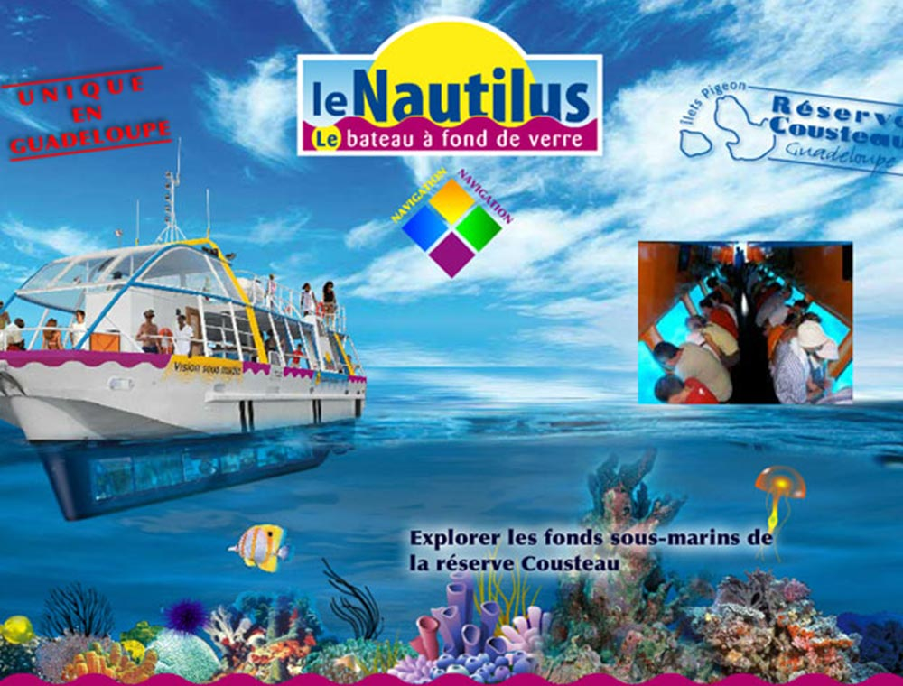

+
Les activités touristiques en Guadeloupe
- baignade
- decouverte marine
- le zoo
- Activités à faire
Vivez la Magie des Fonds Marins de la Guadeloupe à Bord de Notre Bateau à Fond de Verre !
Laissez-vous surprendre par la magie des fonds marins de la Guadeloupe, tout en restant bien au sec ! Montez à
bord de notre bateau à fond de verre et vivez une aventure sous-marine inoubliable, en toute simplicité et
convivialité !

En vous baladant dans le niveau inférieur avec paroi en verre (immergé à 1,5m sous l'eau), vous aurez une vue à
360° sur les coraux
et les nombreuses espèces de poissons qui peuplent la Réserve Cousteau et les Îlets Pigeon. C’est comme si vous
étiez dans un aquarium
naturel, sauf que c’est la mer qui vous entoure ! Après la première partie de la sortie, qui consiste en une
observation des fonds-marins,
vous aurez l’occasion de profiter encore plus de l’océan. La deuxième partie de l’excursion vous permettra en
effet de plonger dans la mer
cristalline avec la session de baignade libre.

Nos tarifs varient selon l’âge et la période de l’année. Voici un exemple :
• Adulte : 25 €
• Enfant de 4 à 12 ans inclus : 13 €
• Gratuit pour les enfants de moins de 4 ans
Des tarifs groupes et familles sont également disponibles.